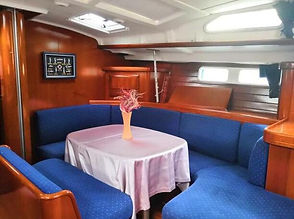
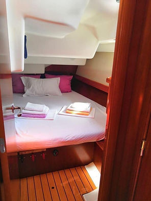

Салон

Каюта

На переходе
О яхте
Beneteau Oceanis 473 Clipper — флагман флота Atlantic Sail. Крупная, надёжная, океанская яхта. Неоднократно пересекала Атлантику: Канары → Кабо Верде → Карибы. Просторный кокпит, 4 отдельные каюты, 3 санузла — комфорт для 6–8 человек на любом маршруте.
Технические характеристики
Тип: парусная яхта-монохулл · Производитель: Beneteau
Длина: 14.4 м · Ширина: 4.49 м · Осадка: 2.0 м
Каюты: 4 · Санузлы: 3 · Мест: до 8
Двигатель: Yanmar 53 л.с. · Запас топлива: 280 л · Запас воды: 400 л
Паруса: грот + генуя + спинакер
Навигация и связь
Garmin картплотер, радар, эхолот, активный АИС, SSB-радио, Iridium спутниковый телефон, EPIRB. Starlink — стабильный интернет в открытом океане, в любой точке маршрута.
Автономность
Солнечные панели + генератор + инвертор — полная энергетическая независимость. Опреснитель воды обеспечивает неограниченный запас пресной воды. Яхта готова к 3–4-недельным океанским переходам без захода в порт.
Комфорт на борту
Просторный салон. 4 отдельные каюты с хорошей вентиляцией. 3 санузла с горячим душем. Полностью оборудованный камбуз: газовая плита, духовка, холодильник. Постельное бельё, посуда, надувная лодка с мотором.
Безопасность
Спасательный плот SOLAS, EPIRB, спасательные жилеты на всех, страховочные пояса, штормовые леера, радиотехнические средства безопасности, пиротехника, аптечка.
Маршруты
Трансатлантика Канары → Карибы (3 000 миль), Канарские острова, Средиземноморье, Черногория. Эта яхта прошла более 11 трансатлантических переходов.